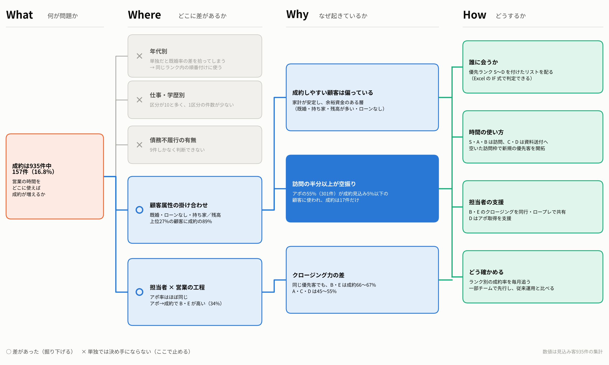
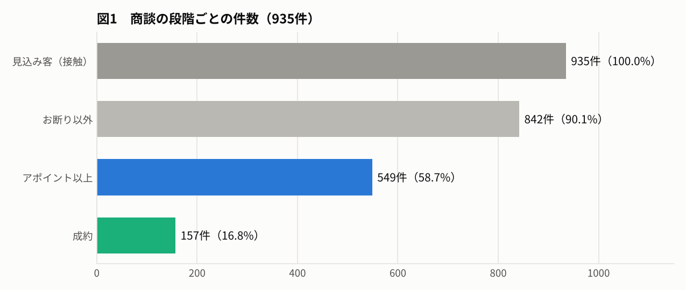
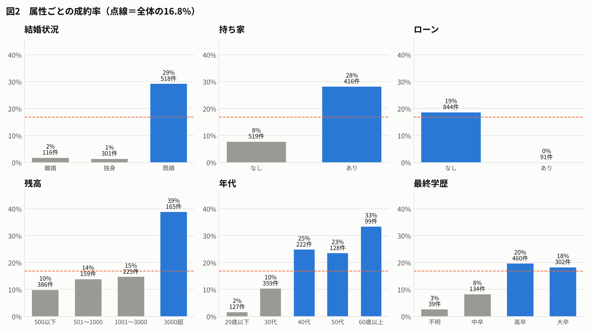
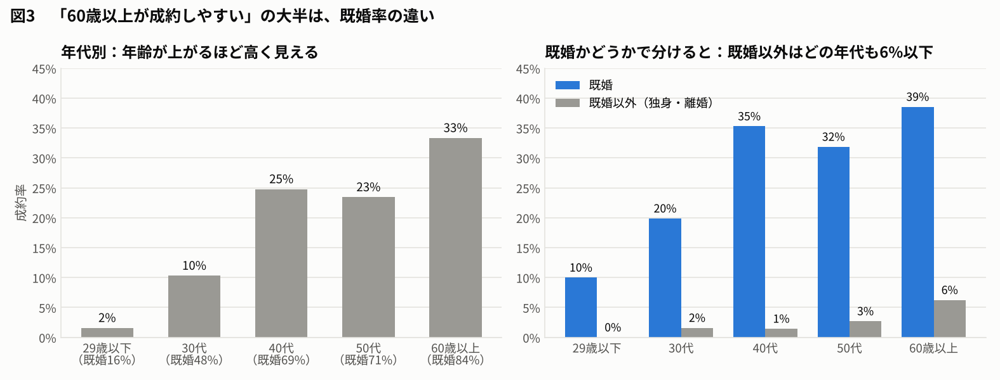
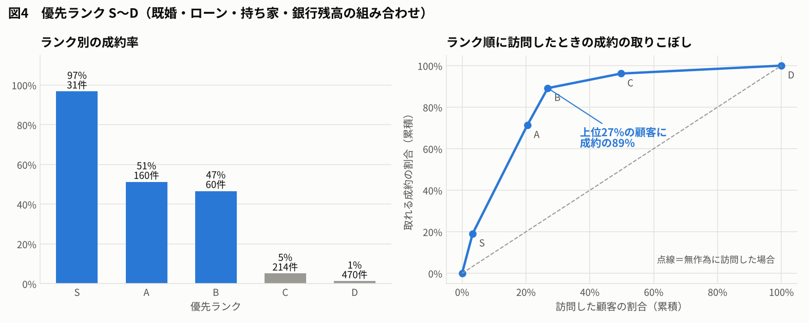
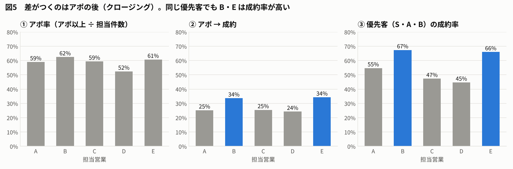

9. 営業支援データ分析 模範解答（講師用）
見込み客935件の商談結果から、営業チームの成約を増やす打ち手を考える
数値はすべて、配布データ（Sheet1、935件×10列）の集計です。 使う手法は、件数・割合の集計、クロス集計、ピボット（掛け合わせ）だけです。検定や回帰は使いません。
9.1. 想定した設問
データに問題文が付いていないため、模範解答では次の設問を想定しました。
あなたは営業企画部の担当者です。営業担当A〜Eが過去に商談した見込み客935件について、顧客の属性と商談の結果が手元にあります。 営業チームの成約を増やすための支援策を提案しなさい。
提出物 |
内容 |
|---|---|
① |
成約しやすい顧客の特徴 |
② |
訪問の優先順位。どの条件の顧客が何件いるか |
③ |
担当者ごとの課題と、その支援策 |
④ |
支援策の効果の見込みと、効果の確かめ方 |
シート右側にある「顧客情報テーブル」（生年月日・住所を分割する例）は、今回の分析では使いません。
9.2. 結論（提出物①〜④の要約）
提出物 |
模範解答 |
|---|---|
① 成約しやすい顧客 |
既婚・ローンなしが前提条件。そのうえで持ち家ありか銀行残高が3,000超の顧客は、成約率が5〜10割に達する。既婚以外（独身・離婚）は417件中6件、ローンありは91件中0件しか成約していない |
② 訪問の優先順位 |
4つの属性で S〜D の5ランクに分ける。上位3ランク（S・A・B）は251件・全体の27%だが、成約157件のうち140件（89%）がここに集まる。C・Dランクは684件で成約17件 |
③ 担当者の課題 |
アポを取る力は5人ともほぼ同じ（52〜62%）。差がつくのはアポの後で、B・Eはアポの34%を成約にするが、A・C・Dは24〜25%。同じ優先客（S・A・B）に限っても、B・Eは66〜67%、A・C・Dは45〜55% |
④ 効果と確かめ方 |
今はアポの55%（301件）が成約見込 み5%以下の顧客に使われている。この訪問を資料送付に切り替え、空いた時間を優先客の開拓とクロージングに回す。A・C・DがB・E並みにクロージングできれば、成約は最大で約30件（+19%）増える。ランク別の成約率を毎月追い、一部チームで先行して従来の運用と比べる |
9.3. 解答の考え方（What → Where → Why → How）

段階 |
問い |
この解答での答え |
|---|---|---|
What |
何が問題か |
935件中、成約は157件（16.8%）。営業の時間をどこに使えば成約が増えるか |
Where |
どこに差があるか |
顧客の側では、既婚・ローン・持ち家・残高の掛け合わせ。営業の側では、アポの後（クロージング）の担当者差 |
Why |
なぜ起きているか |
成約しやすい顧客は一部に偏っているのに、訪問は顧客を選ばずに行われている。加えて、クロージングの力に担当者差がある |
How |
どうするか |
優先ランク付きのリストを配る。C・Dは資料送付に切り替える。B・Eのクロージングを共有する。ランク別の成約率で効果を確かめる |
灰色の枝は「調べたが、単独では決め手にならなかった」ところです。 年代は単独で見ると既婚率の差を拾ってしまうので、ランクの条件には使わず、同じランクの中で訪問する順番を決めるのに使います。
9.4. STEP1 問題設定：「営業支援」を分解する
「成約を増やす」をそのまま考えても、打ち手は出てきません。成約数を式に分けます。
成約数 ＝ 接触する件数 × アポ率 × アポ→成約率
分けた要素 |
対応する問い |
打ち手の方向 |
|---|---|---|
接触する件数（誰に会うか） |
どんな顧客が成約しやすいか |
ターゲティング・訪問の優先順位 |
アポ率 |
アポが取れないのはどこか |
初回接触の改善 |
アポ→成約率 |
アポの後で落ちるのはどこか |
クロージングの改善・担当者の育成 |
営業の時間には限りがあるので、「件数を増やす」より「同じ時間でどこに会うか」と「会った後に取り切れるか」の2つを見ます。
9.5. STEP2 データを理解する
項目 |
中身 |
注意点 |
|---|---|---|
年齢 |
18〜92歳 |
年代に区切って使う |
仕事 |
10区分 |
学生34件・起業家30件など、件数の少ない区分がある |
結婚状況 |
1＝離婚、2＝独身、3＝既婚 |
数値だが大小に意味はない（カテゴリ） |
最終学歴 |
1＝中卒、2＝高卒、3＝大卒、0＝不明 |
0は「不明」で、最も低い学歴ではない |
債務不履行・持ち家・ローン |
0＝なし、1＝あり |
債務不履行ありは9件しかない |
銀行残高 |
0〜77,462（単位の記載なし） |
中央値712に対し最大77,462。平均は外れ値に引っぱられるので、階級に区切って使う |
担当営業マン |
A〜E（各178〜195件） |
担当件数はほぼ均等 |
成約確度 |
0＝お断り、3＝資料送付または見送り、7＝アポイント、10＝成約 |
下の注意を参照 |
9.5.1. 成約確度は「平均」してはいけない
成約確度の 0・3・7・10 は、商談の段階に付けた番号であって、量ではありません。 シートにも「3→7だけ数値のばらつきが異なります」とある通り、間隔もそろっていません。
平均値（全体で5.55）を担当者や属性で比べても、「何が何件増えたのか」が読めません。 代わりに、段階ごとの割合に直して使います。
指標 |
定義 |
全体 |
|---|---|---|
成約率 |
成約確度＝10 の割合 |
16.8%（157件） |
アポ以上率 |
成約確度≧7 の割合 |
58.7%（549件） |
お断り率 |
成約確度＝0 の割合 |
9.9%（93件） |
アポ→成約率 |
成約 ÷ アポ以上 |
28.6% |
もう一つの限界として、「3」には資料送付と見送りという意味の違う結果が混ざっています。 STEP8の提案に、この入力ルールの見直しを含めます。
9.6. STEP3 データの整備
元のシートは L〜O 列にコード表が書かれているので、データ（A〜J列）を新しいシートにコピーしてから列を足します。 列は A＝年齢、B＝仕事、C＝結婚状況、D＝最終学歴、E＝債務不履行、F＝銀行残高、G＝持ち家、H＝ローン、I＝担当営業マン、J＝成約確度 です。
追加する列 |
数式（2行目） |
|---|---|
成約 |
|
アポ以上 |
|
お断り |
|
既婚 |
|
年代 |
|
残高階級 |
|
優先ランク |
|
成約・アポ以上を 0/1 の列にしておくと、ピボットテーブルで「平均」を取るだけで割合が出ます。
9.7. STEP4 全体像：商談のどこで落ちているか

段階 |
件数 |
割合 |
前の段階から |
|---|---|---|---|
見込み客（接触） |
935 |
100% |
|
お断り以外 |
842 |
90.1% |
90.1% |
アポイント以上 |
549 |
58.7% |
65.2% |
成約 |
157 |
16.8% |
28.6% |
接触した顧客の6割近くとはアポまで進んでいます。 しかしアポの7割強が成約に至っていません。訪問の多くが成約につながっていない、というのが出発点です。
9.8. STEP5 属性を1つずつ見る

属性 |
成約率が高い |
成約率が低い |
差 |
|---|---|---|---|
結婚状況 |
既婚 29.2%（518件） |
独身 1.3%、離婚 1.7% |
非常に大きい |
ローン |
なし 18.6%（844件） |
あり 0.0%（91件） |
大きい |
持ち家 |
あり 28.1%（416件） |
なし 7.7%（519件） |
大きい |
銀行残高 |
3000超 38.8%（165件） |
500以下 9.8% |
大きい |
年代 |
60歳以上 33.3%、40代 24.8% |
29歳以下 1.6% |
大きい（STEP6で要確認） |
仕事 |
引退 27.3%、起業家 23.3% |
学生 0.0%、失業者 6.4% |
あるが区分の件数が少ない |
最終学歴 |
高卒 19.6%、大卒 18.2% |
不明 2.6%、中卒 8.2% |
中程度 |
債務不履行 |
なし 17.0% |
あり 0.0% |
9件しかなく判断できない |
1つずつ見ると、ほとんどの属性で差が出ます。 ただし、属性どうしは重なっています（例：年齢が高い人ほど既婚が多い）。 どれが本当に効いているのかは、掛け合わせて確かめる必要があります。
9.9. STEP6 掛け合わせ（層別）で確かめる
9.9.1. ① 年代の差は本物か
60歳以上の成約率は33%で、29歳以下（2%）の約20倍です。「高齢者を狙え」と言いたくなるところです。 年代 × 既婚かどうか でピボットを作ります。

年代 |
既婚の割合 |
既婚の成約率 |
既婚以外の成約率 |
|---|---|---|---|
29歳以下 |
16% |
10.0% |
0.0% |
30代 |
48% |
19.9% |
1.6% |
40代 |
69% |
35.3% |
1.4% |
50代 |
71% |
31.9% |
2.7% |
60歳以上 |
84% |
38.6% |
6.2% |
既婚以外は、どの年代でも成約率6%以下。年齢が高くても、既婚でなければほとんど成約しない
年代別の差の大半は、「年齢が上がるほど既婚の割合が増える」ことの表れだった
ただし既婚の中でも、30代以下は40歳以上より低い。年代は同じランクの中で訪問する順番を決めるのに使う
9.9.2. ② 決め手になる組み合わせを探す
既婚かどうかで大きく分かれたので、既婚の中をさらに分けていきます。
条件 |
件数 |
成約率 |
|---|---|---|
既婚以外（独身・離婚） |
417 |
1.4% |
既婚・ローンあり |
53 |
0.0% |
既婚・ローンなし |
465 |
32.5% |
└ 持ち家あり |
191 |
58.6% |
└ 持ち家なし |
274 |
14.2% |
└ 残高3000超 |
60 |
46.7% |
└ 残高3000以下 |
214 |
5.1% |
持ち家ありの中でも、残高が3000超なら成約率は97%（31件中30件）になります。 ここまでの分け方を、そのまま優先ランクにします。
9.9.3. ③ 優先ランク S〜D
ランク |
条件 |
件数 |
成約数 |
成約率 |
件数の累積 |
成約の累積 |
|---|---|---|---|---|---|---|
S |
既婚・ローンなし・持ち家あり・残高3000超 |
31 |
30 |
96.8% |
3% |
19% |
A |
既婚・ローンなし・持ち家あり（残高3000以下） |
160 |
82 |
51.3% |
20% |
71% |
B |
既婚・ローンなし・持ち家なし・残高3000超 |
60 |
28 |
46.7% |
27% |
89% |
C |
既婚・ローンなし・持ち家なし・残高3000以下 |
214 |
11 |
5.1% |
50% |
96% |
D |
既婚以外、またはローンあり |
470 |
6 |
1.3% |
100% |
100% |

S・A・Bの251件（27%）に、成約の89%が集まっています。 ランクの判定に使うのは、結婚状況・ローン・持ち家・銀行残高の4項目だけです。STEP3の IF 式で、新しい見込み客にも同じランクを付けられます。
9.10. STEP7 担当者を比べる
9.10.1. ① まず「比べてよいか」を確かめる
担当者によって受け持つ顧客が違えば、成約率の差は腕の差ではなく顧客の差かもしれません。 担当者ごとの顧客構成を確かめます。
担当 |
件数 |
既婚の割合 |
持ち家の割合 |
S・A・Bの件数 |
|---|---|---|---|---|
A |
195 |
56% |
43% |
53 |
B |
181 |
57% |
40% |
49 |
C |
192 |
60% |
46% |
55 |
D |
189 |
52% |
43% |
47 |
E |
178 |
51% |
51% |
47 |
顧客構成は5人ともほぼ同じです。担当者どうしを比べてよいと判断します。
9.10.2. ② 商談のどの段階で差がつくか
担当 |
アポ率 |
アポ→成約率 |
成約率（全体） |
優先客（S・A・B）の成約率 |
|---|---|---|---|---|
A |
59.0% |
25.2% |
14.9% |
54.7%（53件） |
B |
62.4% |
33.6% |
21.0% |
67.3%（49件） |
C |
59.4% |
25.4% |
15.1% |
47.3%（55件） |
D |
52.4% |
24.2% |
12.7% |
44.7%（47件） |
E |
60.7% |
34.3% |
20.8% |
66.0%（47件） |

アポを取る力は5人ともほぼ同じ（Dだけやや低い）
差がつくのはアポの後。B・Eはアポの3件に1件を成約にするが、A・C・Dは4件に1件
同じ優先客だけで比べても、B・Eが高い。顧客の差ではなく、クロージングの差と考えられる
件数の注意：優先客は1人あたり約50件なので、1件の差で成約率が2ポイント動きます。 B・EとA・C・Dの差（10〜20ポイント）は5〜10件分にあたり、偶然とは考えにくい大きさです。 ただし、B・Eのやり方の何が効いているのかは、データからは分かりません。同行やヒアリングで確かめます。
9.11. STEP8 営業支援の提案（提出物②③）
9.11.1. 打ち手1：優先ランク付きのリストを配る
見込み客リストに、STEP3の IF 式で優先ランク S〜D を付けて配る
同じランクの中では、40歳以上を先に訪問する（STEP6①）
ランクは「成約しやすさの見込み」であって、顧客の価値ではないことをチームに伝える
9.11.2. 打ち手2：訪問の使い方を変える
ランク |
件数 |
成約率 |
対応 |
|---|---|---|---|
S |
31 |
97% |
最優先で訪問。経験のある担当者が対応する |
A・B |
220 |
47〜51% |
訪問。クロージングに時間をかける |
C |
214 |
5% |
資料送付・メール・オンライン面談に切り替える |
D |
470 |
1% |
資料送付のみ。問い合わせがあれば対応する |
今は、アポ549件のうち301件（55%）がC・Dランクに使われ、そこからの成約は17件です。 1訪問あたりの成約は、S・A・Bで0.56件、C・Dで0.06件と約10倍の差があります。 C・Dの訪問を減らして空いた時間を、優先客のクロージングと、同じ条件の新しい見込み客の開拓に回します。
9.11.3. 打ち手3：担当者を支援する
対象 |
課題 |
支援策 |
|---|---|---|
A・C・D |
アポ→成約が25%前後（B・Eは34%） |
B・Eの商談に同行する。提案の進め方をロールプレイで共有する。B・Eの商談記録から、成約した商談に共通する進め方を洗い出す |
D |
アポ率が52%で5人の中で最も低い |
初回接触の進め方（電話・訪問の時間帯、最初の資料）をB・Eと比べて見直す |
全員 |
Sランクの取りこぼし |
Sランクの商談は、経験者が同席する |
9.11.4. 打ち手4：データの取り方を見直す
今のデータ |
困ること |
見直し |
|---|---|---|
成約確度「3」に資料送付と見送りが混在 |
資料送付後に脈があるのかが分からない |
「3＝資料送付」「4＝見送り」のように分ける |
訪問日・訪問回数がない |
1件にかかった時間が分からず、効率を測れない |
商談ごとに日付と回数を記録する |
商品名がない |
どの商品が誰に売れるのかが分からない |
提案した商品を記録する |
9.12. STEP9 効果の見込みと確かめ方（提出物④）
9.12.1. 効果の見込み
打ち手 |
見込み |
前提 |
|---|---|---|
クロージングの底上げ |
A・C・Dのアポ→成約率が、B・E並み（約34%）になれば、成約は +約30件（157 → 約187件、+19%） |
A＋10件、C＋10件、D＋10件。B・Eの水準は上限の目安 |
訪問の配分の見直し |
C・D向けのアポ301件を資料送付に切り替えると、訪問の55%が空く。その時間で優先客を開拓すれば、1訪問あたりの成約は約10倍 |
同じ条件の新しい見込み客がいること。C・Dから資料送付で取れていた成約（最大17件）の一部は失う可能性がある |
9.12.2. 確かめ方
記入欄 |
内容 |
|---|---|
測る指標 |
ランク別の成約率、アポ→成約率、1訪問あたりの成約数 |
比較の置き方 |
新しい運用を一部の担当者（またはチーム）で先行し、従来の運用の担当者と比べる。担当者の腕の差が混ざらないよう、前後比較もあわせて見る |
期間 |
3か月で中間確認、6か月で判定 |
成功の判定 |
1訪問あたりの成約数が上がり、かつ成約の総数が減っていないこと |
ランクの見直し |
毎月、ランク別の実際の成約率を確かめ、ずれてきたら条件を見直す |
9.13. 注意すべき点
属性は「原因」ではない：結婚すれば買うわけではありません。既婚・持ち家・残高は、「家計が安定していて余裕資金がある」ことの目印と考えられます。打ち手は「誰に先に会うか」に使い、「既婚者向けのトーク」のような決めつけには使いません
顧客を断る理由にしない：結婚状況などで訪問の優先順位を決めるのは社内の効率化のためです。低ランクの顧客から問い合わせがあれば、通常通り対応します。顧客の属性を営業に使う場合は、個人情報の利用目的の範囲内であることも確認します
件数が少ない区分で結論を出さない：債務不履行あり（9件）、学生（34件）などは、たまたまの結果かもしれません
担当者を評価する材料にしない：比較の目的は、うまくいっているやり方を共有することです
9.14. よくある誤答
誤答 |
どこが誤りか |
|---|---|
「成約確度の平均はBが5.83で最も高い」 |
0・3・7・10は段階の番号で、平均に意味がない。段階ごとの割合で比べる |
「60代が成約しやすいので、シニア向けに営業する」 |
差の大半は既婚率の違い。既婚以外の60代は6%しか成約しない |
「銀行残高の平均は成約者のほうが高い」 |
最大77,462の外れ値に引っぱられる。階級に区切って見る |
「Dの成約率が低いので、Dの担当を減らす」 |
アポ→成約はA・Cと同じ水準。Dの課題はアポ率。支援の方向が違う |
「債務不履行の人は成約しない」 |
9件しかなく、判断できない |
「低ランクの顧客には営業しない」 |
資料送付など、手間の少ない対応に切り替えるのであって、切り捨てるのではない |